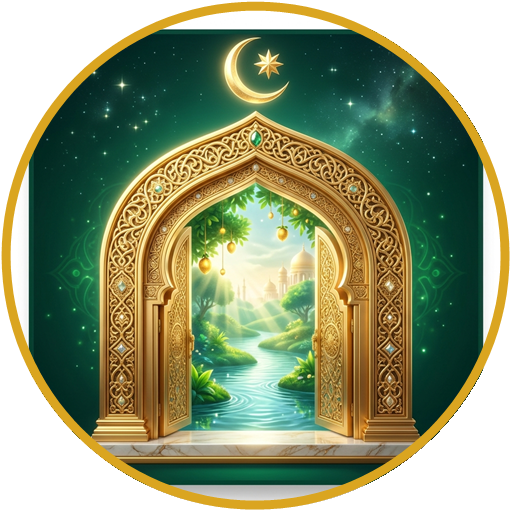

مسرح وقصص براعم الجنة 🌟
مكتبة ساحرة من قصص بر الأم، عظمة الصلاة، ومواقف الأنبياء معروضة بالقراءة التفاعلية والفيديو الممتع!
تلاوات الشيخ مشاري العفاسي، أذان الحرم المكي الشريف، المصحف المعلم للبراعم، ورقية شرعية، إضافة إلى أناشيد هادفة بدون إيقاع.
🧩 رتّب آيات القرآن الكريم
سورة الكوثر • 3 آياتانقر على الكلمات بالترتيب الصحيح لتركيب الآية الكريمة ونيل الحسنات:
طابق أزواج الرموز الإيمانية بأقل عدد حركات لكسب ماء الحديقة والحسنات:
انقر على الكلمات بالترتيب الصحيح لتكوين الحديث النبوي الشريف:
التحكم بتنبيهات الأذان لكل صلاة:
بوصلة القبلة التفاعلية الحية
وجّه هاتفك نحو الكعبة المشرفة في مكة المكرمة

تطبيق بوابة الجنة
تطبيق "بوابة الجنة" صُمّم بعناية ليكون دليلك ورفيقك اليومي نحو الفردوس الأعلى، جامعاً بين القرآن الكريم وتكرار التحفيظ للأطفال، قصص بر الوالدين والصلاة، الألعاب الذكية الإدمانية، والسكينة الإيمانية.
🛡️ الخصوصية التامة وحماية البيانات:
• جميع بياناتك من تتابع الأيام، سقاية الحديقة، والتسبيحات تُحفظ محلياً 100% داخل هاتفك ولا تُرسل لأي خادم خارجي.
• إحداثيات الموقع الجغرافي تُستخدم فقط داخل جهازك لحساب مواقيت الصلاة واتجاه القبلة ولا يتم تسجيلها نهائياً.
• التطبيق خالٍ تماماً من الإعلانات المزعجة ومن أي علامات تجارية أو استضافات خارجية.